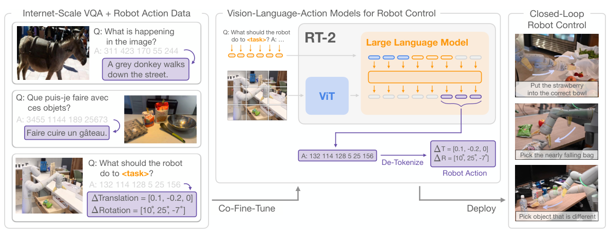
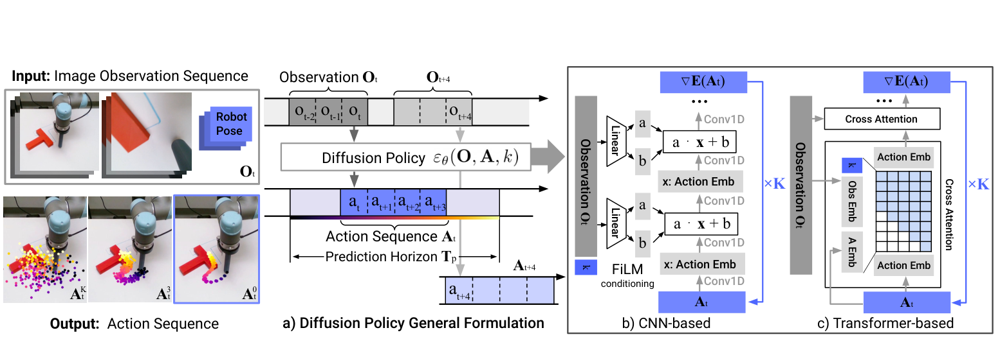
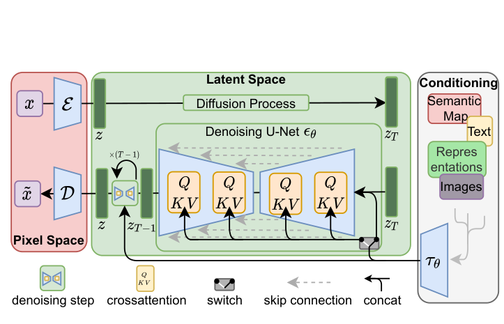
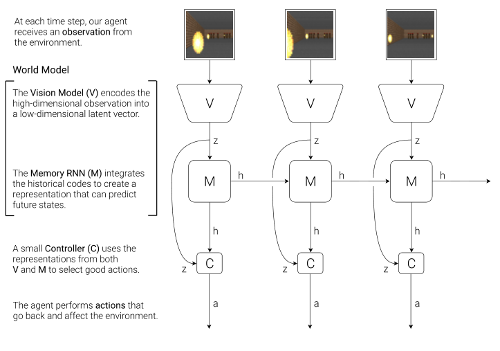
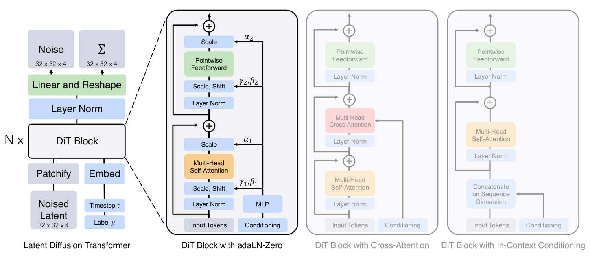
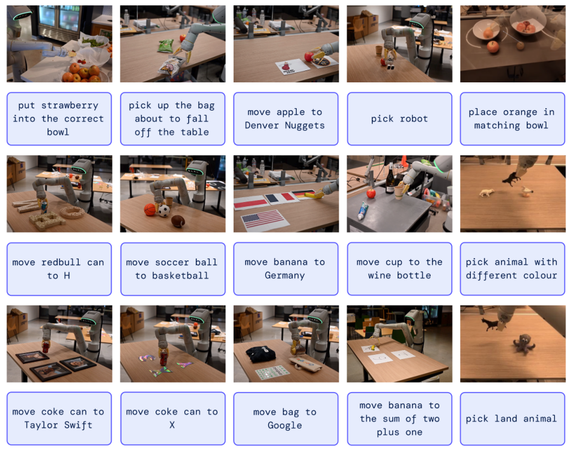
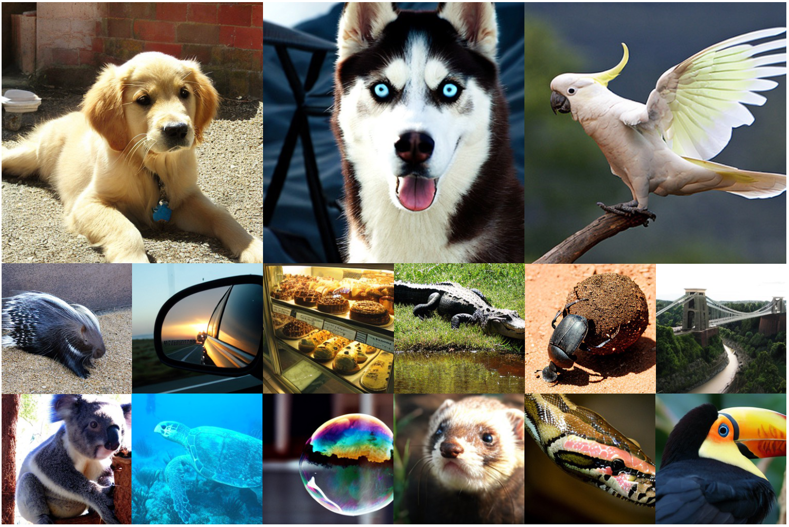

12 张原论文配图 · 点击图片放大 · 按编号挑选
放在后训练介绍旁边，三列把数据怎么来、模型怎么更新串在一起。
放在 CLIP 介绍旁边：同一张图同时解释图文配对训练和使用文字标签分类。
接在卷积与视觉 Transformer 的介绍后，图像切块、位置编码、编码器都有对应位置。

放在 VLA 一节：左侧是训练数据，中间是模型，右侧是机器人执行。

放在 Diffusion Policy 的介绍后。左半边是输入与动作，右半边给出两种网络实现。

放在潜空间扩散介绍旁边。三种底色区分像素空间、潜空间和条件输入。

接在 World Models 的项目入口后，沿时间轴看 V、M、C 三个模块的连接。
放在分子任务介绍旁边，用一条分支对照昂贵计算与学习得到的性质预测。

放进 DiT 小卡。结构完整，但细节多，展开大图更适合看条件怎样进入模块。
放进 FlashAttention 小卡，配合访存和分块的解释看。图右侧还有论文中的耗时对照。

可以放在具身页开头，用真实任务引出 VLA；正文方法图仍选上面的 RT-2 总览。

可以放在生成页开头，让读者先看到输出样子；方法解释接 LDM 或 DiT 的结构图。
Bofan Zhu / Hikaru